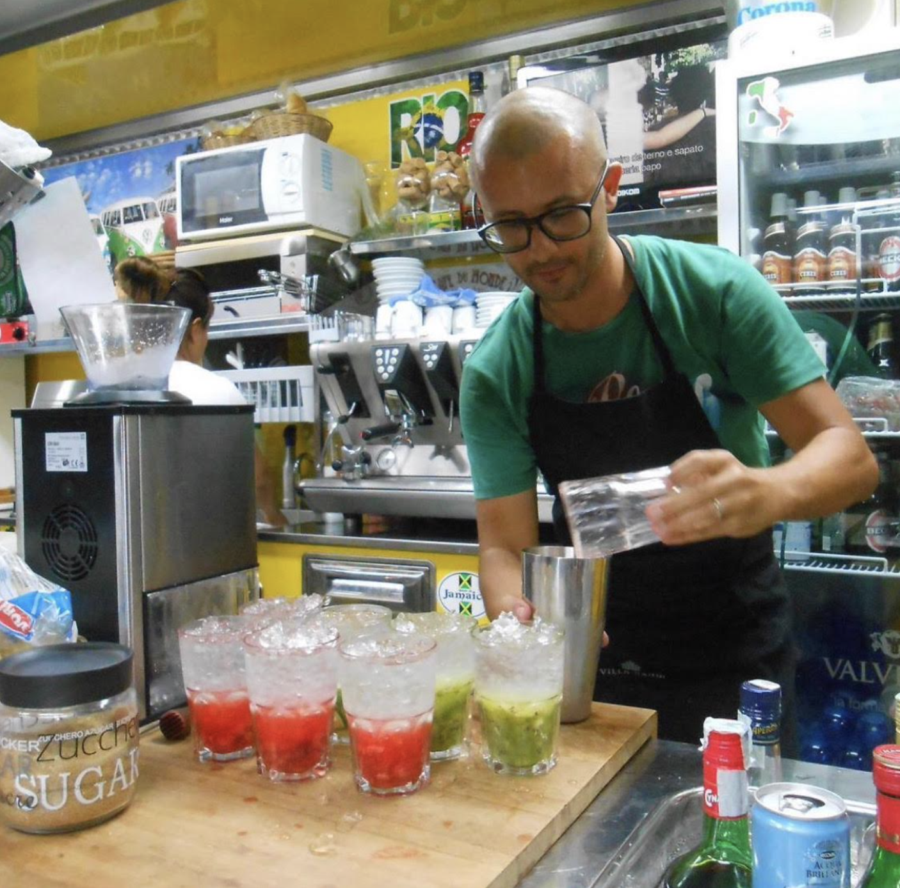
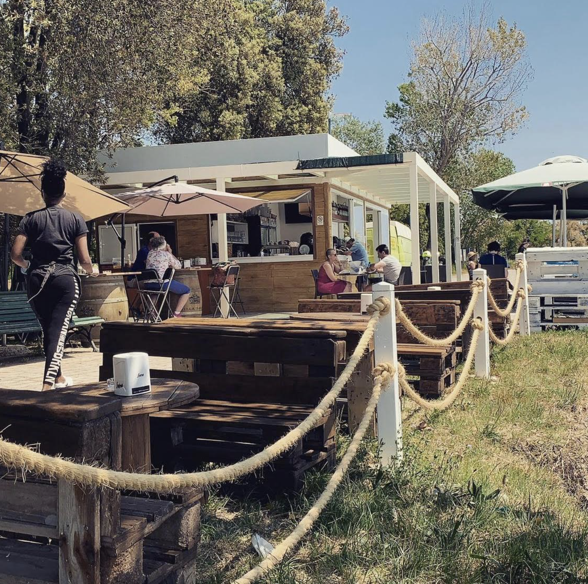
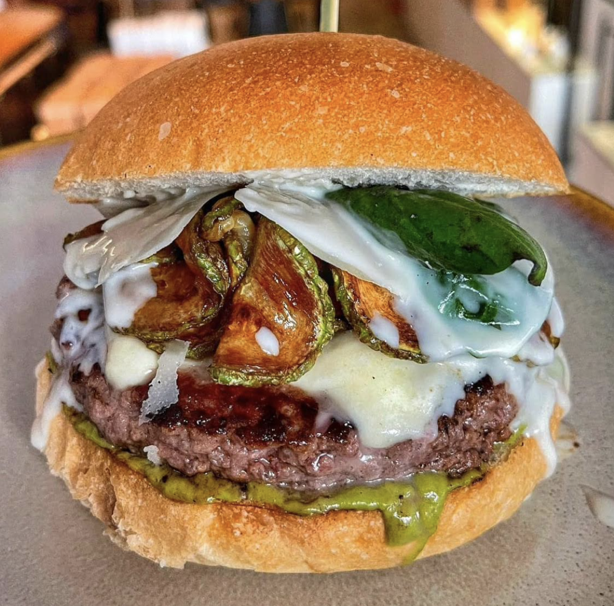
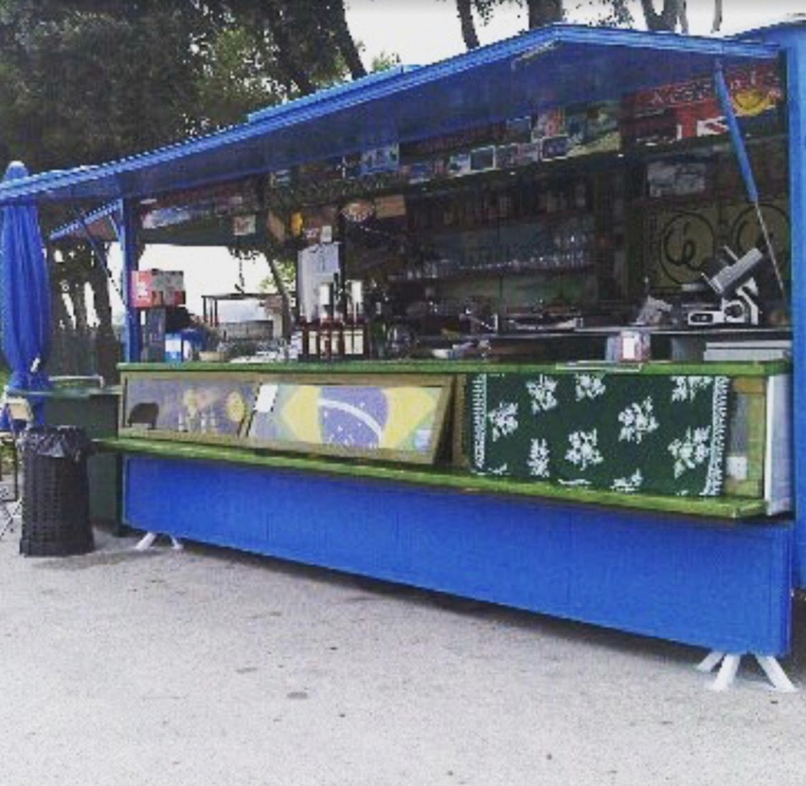

Sandro is a kind local guy who decided to open a stand inside a truckcamion at the very end of the island called "el chiosco", which means "the stand".

When the weathertempo is nice this is the perfect place to have lunch with your family or your friendsamici . Quiet place, in the middle of the nature and next to the water.
Hamburger with eggplantmelanzana , pesto sauce, cheese, meet and mayonnaise is one of Sandro's specialty.

Sandro's stand has a brazilian touch. All of his employeesimpiegati , including his wife, are brazilians. And the speakerscasse are always playing brazilian artists. With time he renewed the stand, but you remember how it all started.

Click on "Final" if you want to continue meeting people and visiting Pellestrina. Or click "Go back" if you want to relive some island experiences.